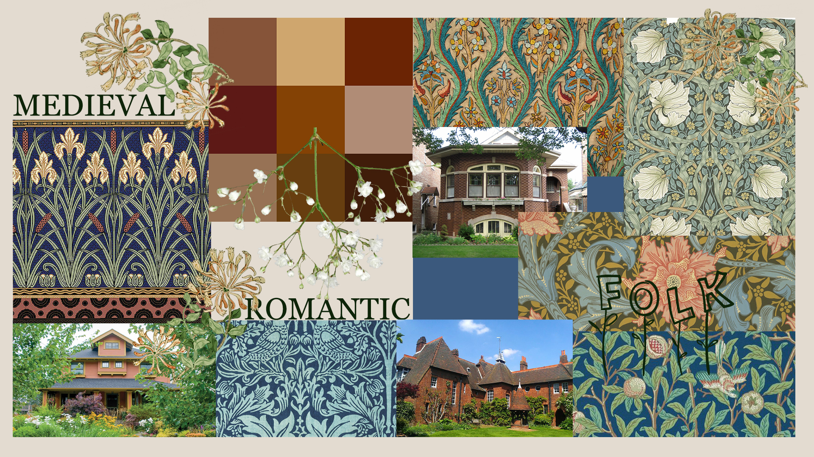

02.01.01 Moodboard
Our first assignment in the basic web theme was to create a moodboard of the style that we have been randomly given. For me it was Arts & Crafts - English aesthetic style created in the second half of the 19th century. Moodboard served as a tool to help me visualize the style and gather all of its characteristics after doing a profound research.
02.01.02 Project work documentation
After moodboard it was time to figure out other visual elements of a website such as what fonts we will be using, what kind of colors would suit it best, curate parts of the content, sketch and overall present our developing process.
02.03.01 Design, UX and process document
When the website was ready it was time to improve it based on design principles and user experience. It was important to take under consideration all the gestalt principles, legibility, usability and readability, run a trunk test on a person to see a different perspective, analyze popular websites, make sketches of wireframes - everything to make our work as user-friendly as possible. I also got introduced to XD prototyping.
02.04.01 Responsive website
The final goal of the whole theme was to create a responsive website which means a website that can display equally well in everything from widescreen monitors to mobile phones. I made it happen using advanced CSS, flexible content, grid design, media queries and implementing breakpoints for the main layout.